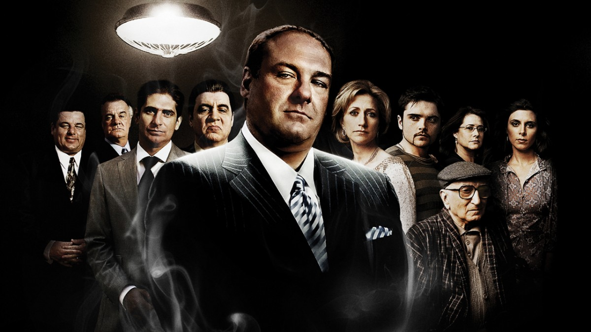
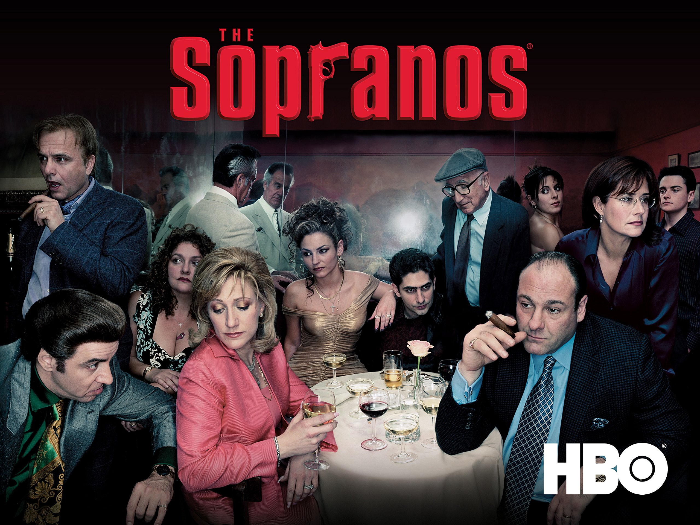

"The Sopranos" is an American television series created by David Chase. It premiered on HBO on January 10, 1999, and concluded on June 10, 2007, after six seasons and a total of 86 episodes. The show is widely regarded as one of the greatest television series of all time and played a significant role in the popularization of the "golden age of television."
The series revolves around Tony Soprano, portrayed by James Gandolfini, a New Jersey mob boss who struggles to balance the demands of his crime family with those of his personal life. The show explores Tony's internal conflicts, his relationships with family and associates, and the psychological impact of leading a criminal enterprise. Key characters include Tony's wife Carmela (played by Edie Falco), his children Meadow (Jamie-Lynn Sigler) and Anthony Jr. (Robert Iler), and various members of the Soprano crime family, such as Paulie Gualtieri (Tony Sirico), Silvio Dante (Steven Van Zandt), and Christopher Moltisanti (Michael Imperioli). The series also delves into Tony's therapy sessions with Dr. Jennifer Melfi (Lorraine Bracco), providing insight into his psychological struggles.
